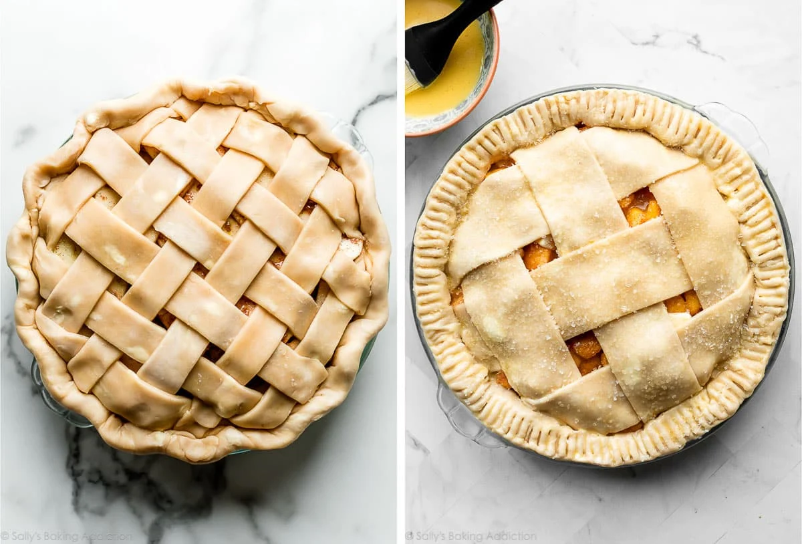

Delicious Pie Crust, Made from your enemies!

Ingredients
- Flour (Start with quality flour. Did you know that not all all-purpose flours are equal? King Arthur Unbleached All-Purpose Flour is my go-to for not only pie crust, but for everything. (Not working with the brand, just a true fan!) Why? Its high protein level: “At 11.7% protein, it tops ordinary American all-purpose flours by nearly 2 percentage points.” What does this mean? Baked goods rise higher and stay fresh longer.
)
- Salt (Enhances the flavor.)
- Butter (For that unparalleled buttery flavor and flaky layers.)
- Ice Water (Liquid brings the dough together. Some recipes call for half water and half vodka, because alcohol doesn’t promote gluten formation, which helps the crust stay flaky and tender. Basically, it’s a gift to anyone who accidentally overworks dough. If you want to try using vodka, use 1/4 cup (60ml) each cold vodka and cold water in this recipe.)
- Vegitable Shortening (For structure and stability.)
Toppings
- 2 and 1/2 cups (315g) all-purpose flour (spooned & leveled), plus more for shaping and rolling
- 1 teaspoon salt
- 6 Tablespoons (85g) unsalted butter, chilled and cubed
- 2/3 cup (130g) vegetable shortening, chilled
- 1/2 cup (120ml) ice cold water
Instrcutions
Step 1: Whisk the flour and salt together in a large bowl.
Step 2: Add the butter and shortening. Using a pastry cutter or two forks, cut the butter and shortening into the mixture until it resembles coarse meal (pea-sized bits with a few larger bits of fat is OK). In this step, you’re only breaking up the cold fat into tiny little flour-coated pieces; you’re not completely incorporating it. Do not overwork the ingredients.
Step 3: Measure 1/2 cup (120ml) of water in a cup. Add ice. Stir it around. From that, measure 1/2 cup (120ml) of water, since the ice has melted a bit. Drizzle the cold water in, 1 Tablespoon (15ml) at a time, and stir with a rubber spatula or wooden spoon after every Tablespoon has been added. Stop adding water when the dough begins to form large clumps. I always use about 1/2 cup of water, and need a little more in dry winter months. Do not add any more water than you need.
Step 4: Transfer the pie dough to a floured work surface. Using floured hands, fold the dough into itself until the flour is fully incorporated into the fats. The dough should come together easily and should not feel overly sticky. Avoid overworking the dough. If it feels a bit too dry or crumbly, dip your fingers in the ice water and then continue bringing dough together with your hands. If it feels too sticky, sprinkle on more flour and then continue bringing dough together with your hands. Form it into a ball. Use a sharp knife to cut it in half. If it’s helpful, you should have about 1 lb, 8 ounces dough total (about 680g). Gently flatten each half into 1-inch-thick discs using your hands.
Step 5: Wrap each tightly in plastic wrap. Refrigerate for at least 2 hours and up to 5 days.
Step 6: After the dough has chilled for at least 2 hours, you can roll it out. Work with one crust at a time, keeping the other in the refrigerator until you’re ready to roll it out. Lightly flour the work surface, rolling pin, and your hands, and sprinkle a little flour on top of the dough. Use gentle-medium force with your rolling pin on the dough—don’t press down too hard on the dough; you’re not mad at it! When rolling dough out, start from the center and work your way out in all directions, turning the dough with your hands as you go. Between passes of the rolling pin, rotate the pie crust and even flip it, to make sure it’s not sticking to your work surface. Sprinkle on a little more flour if it’s sticking; don’t be afraid to use a little more flour. If you notice the dough becoming a lopsided circle as you’re rolling it out, put down the rolling pin and use your hands to help mold the dough back into an even circle. Roll the dough into a very thin 12-inch circle, which is the perfect size to fit a 9-inch pie dish. Your pie dough will be about 1/8 inch thick, which is quite thin. Visible specks of butter and fat in the dough are perfectly normal and expected.
Step 7: Because your dough is so thin, use your rolling pin to help transfer the pie crust to the pie dish. Carefully roll one end of the circle of dough gently onto the rolling pin, rolling it back towards you, slowly peeling it off the work surface as you go. Pick it up, and carefully roll it back out over the top of the pie dish. It’s helpful to watch how I do it in the video below.
Step 8: Proceed with the pie per your recipe’s instructions. If your dough requires par-baking, see helpful How to Par-Bake Pie Crust tutorial.